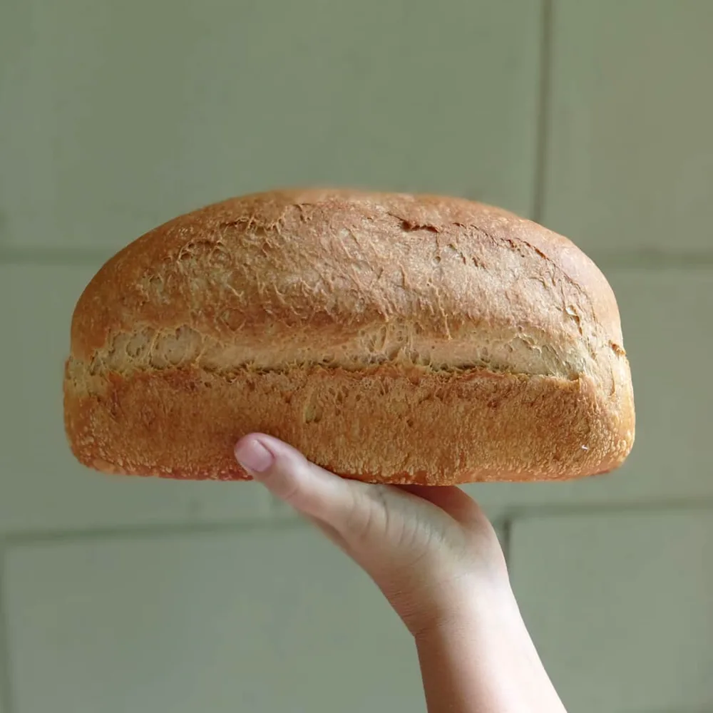

Quem Somos
Ali por meados de 2010, o Jonas começou a fazer Pão em casa. Veio de uma famÃlia em que só se comia Pão de verdade — Pão de forma, aquele bem simples. E foi de uma tradição da famÃlia que surgiu a Pão de Verdade: fermentação natural, ingredientes locais, comida de verdade.

Pão simples, honesto e saudável
Um Pão de Verdade é feito com ingredientes locais e fermentação natural. Sem conservantes, fresco, crocante por fora e macio por dentro — igual aquele que você já comeu em algum lugar no passado.
Os cursos acontecem no nosso ateliê, dentro de casa, no bairro Santa Mônica — um ambiente de cerâmica, madeira, forno e calma.
No mesmo espaço, nossa padaria artesanal abre todos os dias para retirada: pães de fermentação natural, biscoitos, granolas e mais. Veja nosso cardápio e nos acompanhe no Instagram.
Jonas
Paixão por Pão caseiro? Ele é, demais. É o responsável por conduzir os cursos, trazendo experiência e entusiasmo pra ensinar panificação e pizzaria de forma prática e envolvente.
Alice
Ceramista talentosa — os pães e as mesas do Pão de Verdade vivem sobre as cerâmicas dela. Sua sensibilidade artÃstica torna cada experiência única.
Vem fazer parte dessa história
Uma manhã de Pão, uma noite de pizza, uma mesa cheia de gente boa. Esperamos você.
💬 Falar com a gente